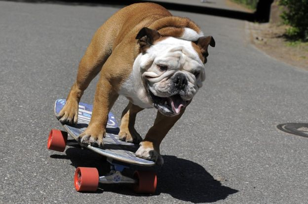

Welcome all bulldog lovers
This site is dedicated to those who love English Bulldogs and want to look at cute puppy pictures.

This site is dedicated to those who love English Bulldogs and want to look at cute puppy pictures.
It is pretty common to train a bulldog to preform a seemingly impossible task for a dog. There are numberous videos available online of bulldogs skateboarding and surfing. Check out the image below!
Bulldogs are world famous for their easy going nature and goofy personality. They are perfectly happy relaxing with you on the couch and make great buddies to kids in the house.
English Bulldogs require a lot of mainentce. Unfortunately, some people don't realize this when they get an bulldog. Their folds have to be clean daily and there are numerous issues that this breed can develop. For these reasons, there are a lot of bulldogs that end up in rescue becasue their previous owners could not care for them. There are many good reasons to adopt a dog instead of purchasing.